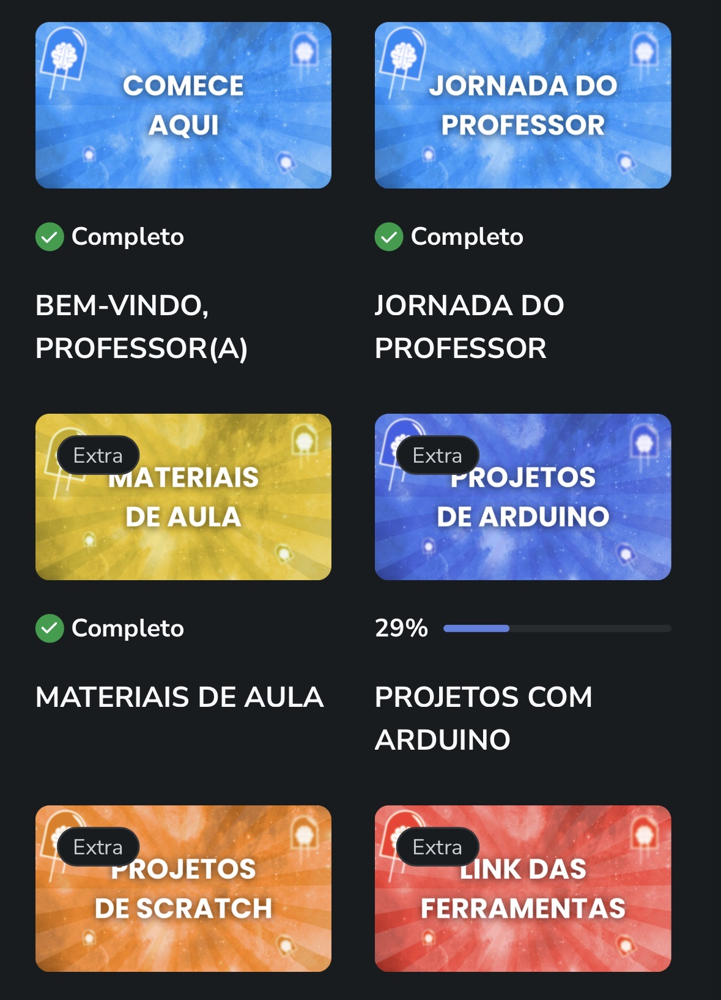

Curso online completo com suporte, materiais e comunidade para aplicar robótica com segurança e propósito.
Quero entrar na comunidade agoraA Robótica Educacional já faz parte do presente da educação, mas muitos professores ainda enfrentam dificuldades para planejar e aplicar aulas com segurança, clareza pedagógica e alinhamento com a BNCC Computação.
A Formação Mentes Makers foi criada para apoiar exatamente esse professor, oferecendo um caminho estruturado, prático e acessível para ensinar Robótica em sala de aula — mesmo sem experiência prévia com tecnologia.
Ao longo da formação, você aprende a planejar aulas com intencionalidade, organizar objetivos e conteúdos, aplicar metodologias ativas e transformar a Robótica em uma ferramenta pedagógica real, capaz de desenvolver competências essenciais nos alunos.
Além disso, você terá acesso a planos de aula prontos, projetos aplicáveis, materiais de apoio e exemplos reais — que ajudam a sair do improviso e conduzir aulas mais seguras, organizadas e engajadoras. Tudo isso com acesso vitalício, conteúdos sempre atualizados, suporte para dúvidas e uma comunidade de professores que evoluem juntos na prática.

Curso online com acesso vitalício
Aulas e materiais sempre atualizados, sem custo adicional
Planos de aula prontos para aplicar
Projetos práticos com Arduino e cultura maker
Alinhamento com a BNCC Computação
Método 3E's — Explorar, Executar e Evoluir
Suporte para dúvidas durante toda a jornada
Comunidade com outros professores
Certificado ao final do curso
Se sinta seguro ao trabalhar com robótica em sala de aula. Junte-se à comunidade Mentes Makers e transforme sua forma de ensinar.
Quero entrar na comunidade agora